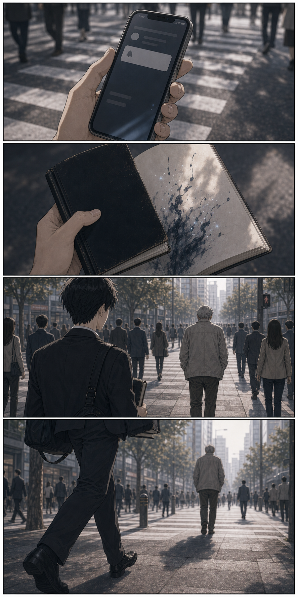
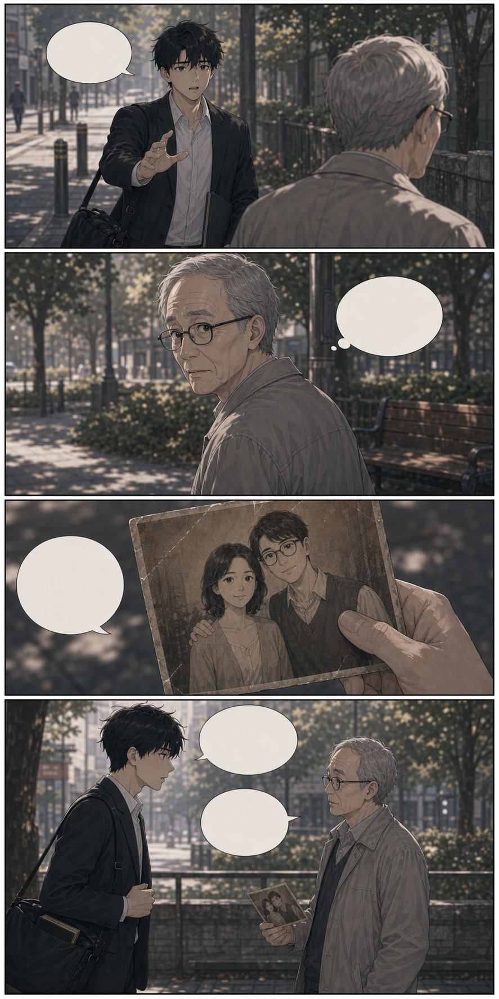
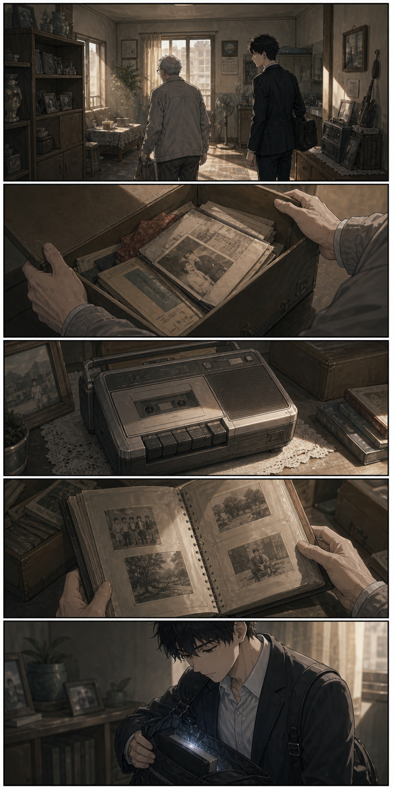
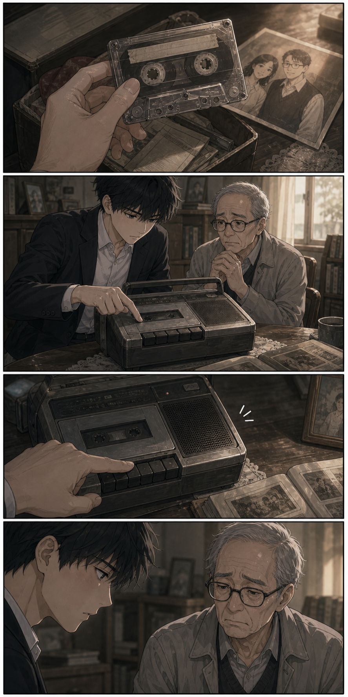
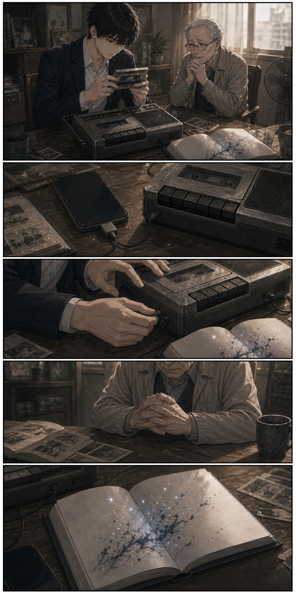
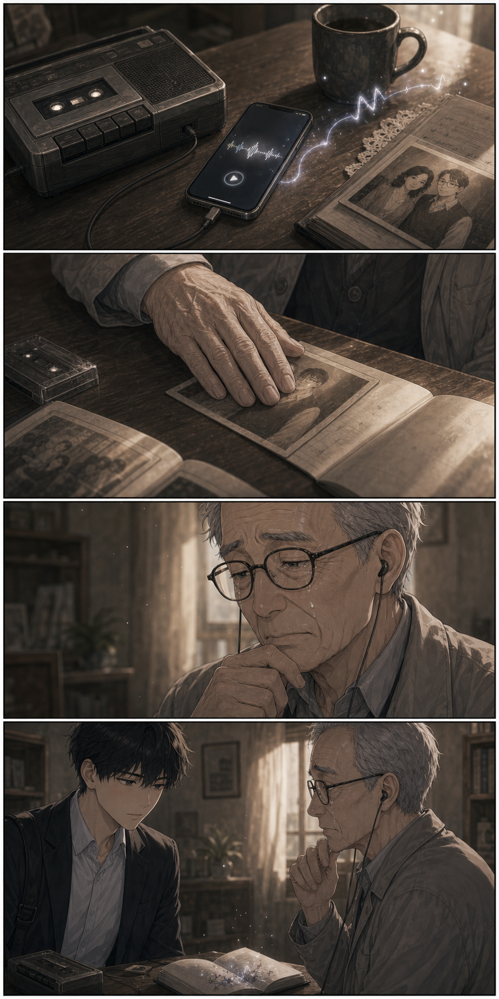
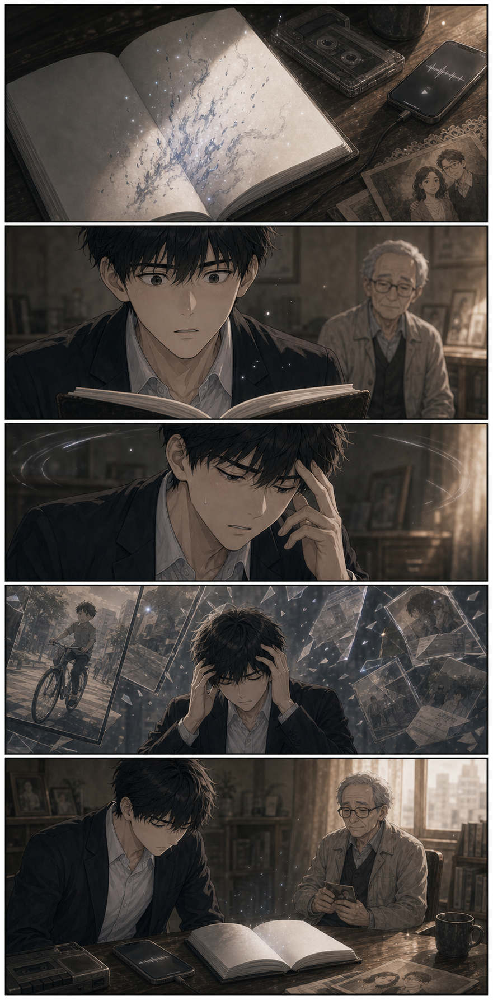
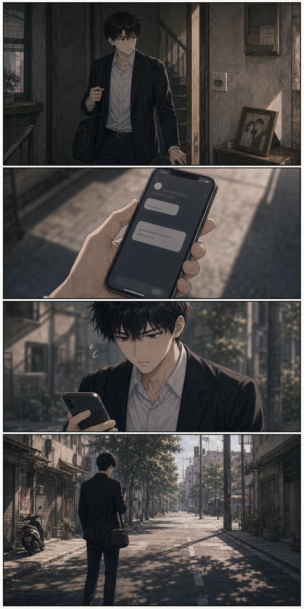
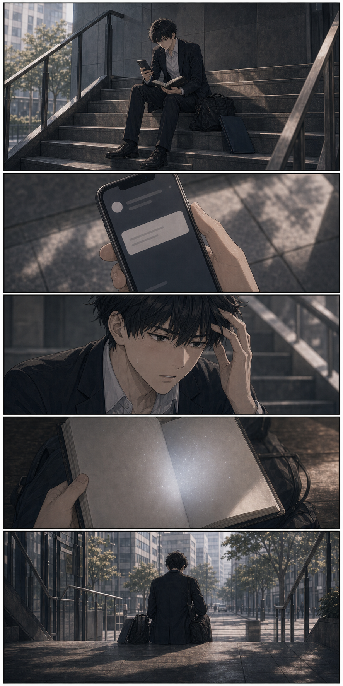

Episode 01
備忘錄上的陌生願望
第 1 話完整完成品 V1｜20 頁

10:00 面試
帶履歷
我不討厭忘記事情。
我只是害怕忘記之後，才發現那件事很重要。

面試清單
履歷
證件
作品集
履歷、證件、作品集、悠遊卡。
不要忘，拜託不要忘。

有些人不用備忘錄提醒，也會記得你。

如果我那天沒有停下來。
自由取用
後來的事，也許都不會發生。

09:21
現在不是看書的時候吧。
可是那一頁，乾淨得像在等誰寫下什麼。

反正只是空本子。
拿來記面試問題也好。

提醒
距離面試 30 分鐘
糟了。
我以為那只是一本空白備忘錄。

我想再聽一次她的聲音。
這是什麼？

不好意思，年紀大了，手不太穩。
那不是我的字。
也不像是任何人剛剛寫上去的。

提醒
距離面試 20 分鐘
我想再聽一次她的聲音。
我現在真的沒時間。
那時候，我還不知道。
願望一旦被看見，就不會自己消失。

提醒
距離面試 18 分鐘
等一下！
我明明知道，自己快來不及了。

剛才那張照片，是很重要的人嗎？
她是我太太。已經走了三年了。
他說得很輕，像怕驚動什麼。

老先生家裡，時間像停在某一天。
她以前最愛把聲音錄下來，說怕我忘記。
忘記。那兩個字，又刺了我一下。

應該就是這一卷。
喀。
機器沒有聲音。
沒關係，也許本來就該這樣。

等我一下，我試試看。
我不知道自己為什麼這麼急。
也許是因為，那句願望還在我腦子裡發亮。

「今天也要記得吃飯喔。」
錄音裡的聲音，很普通。
普通到像她只是去了隔壁房間。

我想再聽一次她的聲音。
字跡慢慢淡掉。
咦？
同時，有什麼東西從我身上被抽走了。

這個名字，我看得懂。
可是那份熟悉感，不見了。
提醒
面試時間已過
我錯過了面試。
也錯過了自己原本應該記得的一件事。

若音……是誰？
備忘錄翻到新的一頁。
下一個願望，正在等待被看見。
而我，開始害怕自己真的會忘記。